Savaitės meniu ir pirkiniai
Visos savaitės pusryčiai, pietūs ir vakarienės, kasdien po naują produktą. Pirkinių sąrašas iškart padalintas: ką pirkti turguje, o ką parduotuvėje.
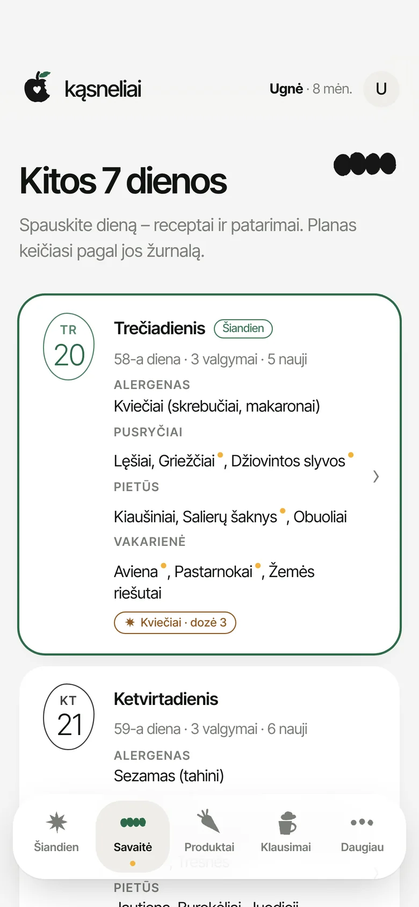
Pirmoji lietuviška programėlė, skirta BLW, kai kūdikis valgo pats. Kasdien sužinosite, ką pasiūlyti, kaip paruošti pagal amžių ir kada įvesti alergenus.
Parašysime tik tada, kai programėlė bus paruošta. Jokių reklamų, atsisakyti galėsite bet kada.
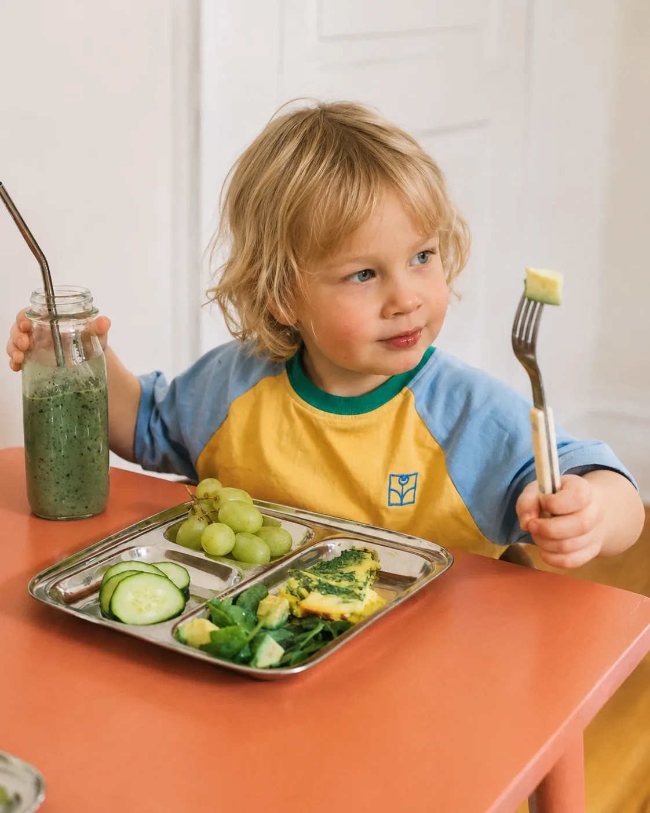
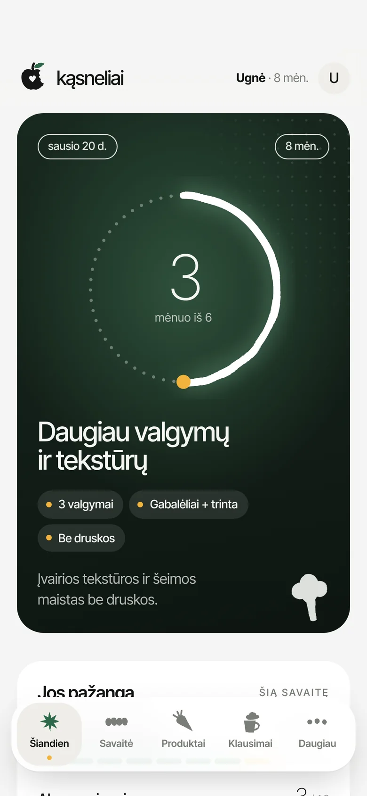
Iki šiol tokios nebuvo. Jokio naršymo forumuose ir pasenusios informacijos: viskas vienoje vietoje.
Maistingumas, kada duoti ir kaip saugiai paruošti 6–9 mėn. ir vyresniam kūdikiui.
Kada ir kaip juos įvesti, laikantis PSO, ESPGHAN ir NHS rekomendacijų.
Planas auga kartu su kūdikiu. Nurodykite gimimo datą ir dieną, kada pradėsite, o programėlė parodys, kam ruoštis dabar.
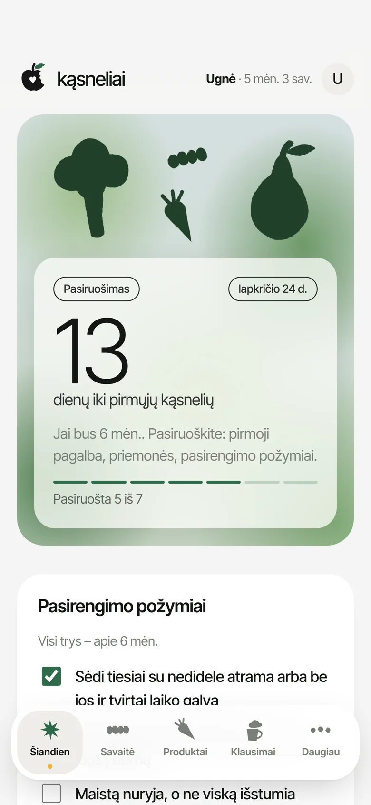
Visos savaitės pusryčiai, pietūs ir vakarienės, kasdien po naują produktą. Pirkinių sąrašas iškart padalintas: ką pirkti turguje, o ką parduotuvėje.

Kiaušinis, žemės riešutai, pienas, kviečiai ir kiti. Programėlė pasakys, kada ir kiek duoti, kiek laiko stebėti ir kada verta pirma pasitarti su gydytoju.
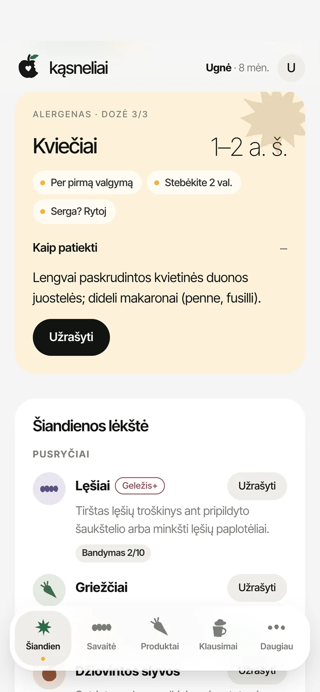
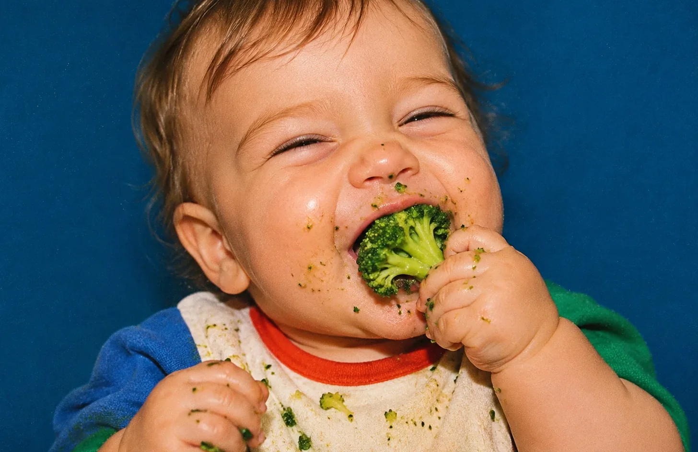
Planą sudarome iš to, kas dabar auga: pigiau, šviežiau ir skaniau.
Kiekvienam produktui: kaip supjaustyti, kokio minkštumo turi būti ir ką iš jo pagaminti.
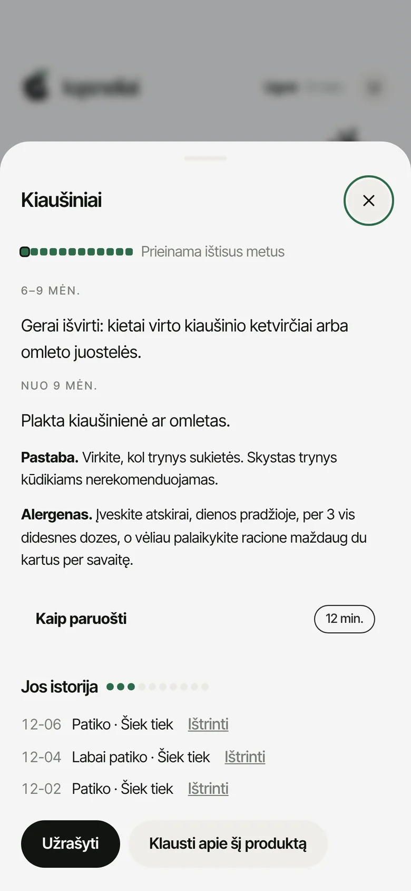
„Ar normalu, kad žiaukčioja?“ Atsakymai pritaikyti jūsų mažyliui: jo amžiui ir tam, ką jis jau ragavo.
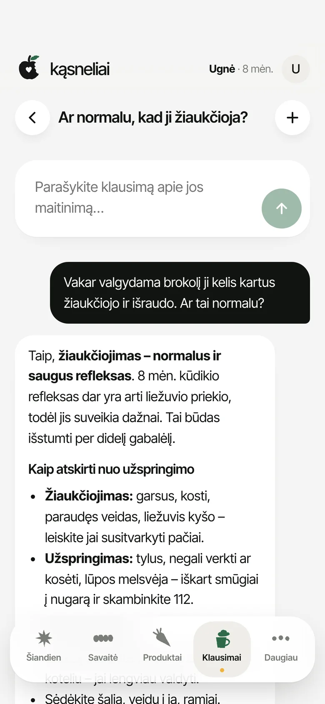
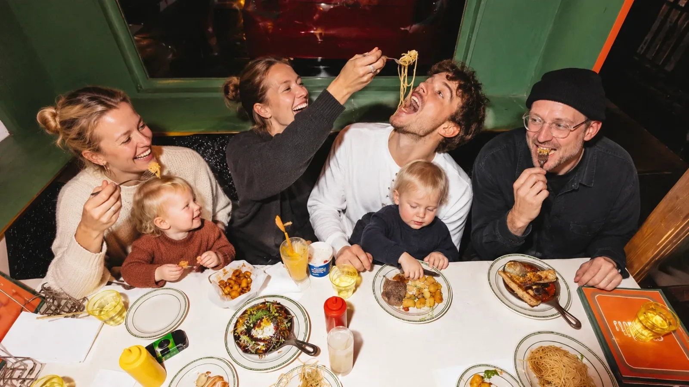
Po valgio pažymėkite, kiek suvalgė ir ar patiko. Jei brokolis neprigijo, kitą kartą programėlė pasiūlys jį paruošti kitaip. Naujam skoniui priprasti dažnai reikia 8–10 kartų.
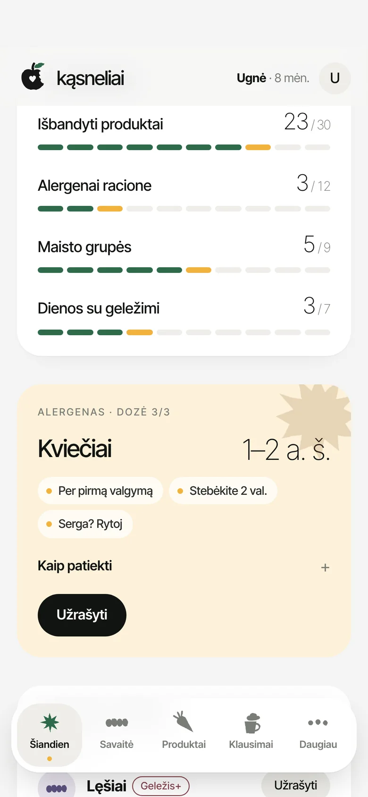
Labiausiai tėvai nerimauja dėl užspringimo ir alergijų. Kąsneliai padeda iš anksto žinoti, ką daryti.
Kiekvieną produktą paruošite taip, kad mažylis jį suvaldytų. Apvalius, pavyzdžiui, vynuoges, visada pjaukite ketvirčiais.
Žiaukčiojimas garsus ir normalus, užspringimas tylus ir pavojingas. Išmoksite juos atskirti ir žinosite, kada skambinti 112.
Programėlė sustabdys naujų alergenų įvedimą ir parodys, kada reikia skubios pagalbos.
Programėlė gydytojo nepakeičia. Jei mažylis serga, turi alergiją ar kyla abejonių, visada pasitarkite su pediatru.
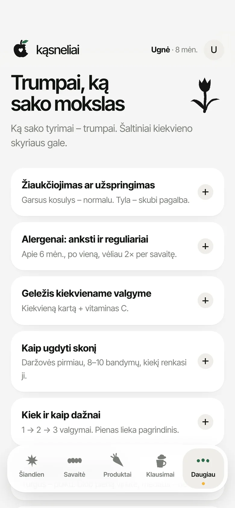
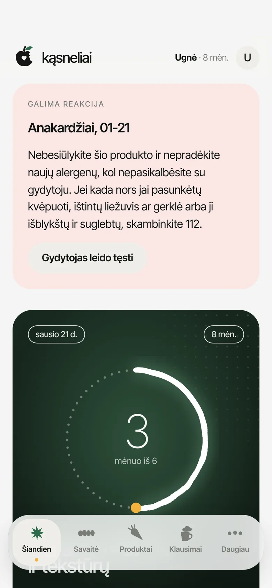
Norime, kad programėlė iš tiesų padėtų, o ne tik gražiai atrodytų. Todėl prieš išleisdami ją bandome su tikromis šeimomis ir lyginame rezultatus.
Dienos ir savaitės planai, daugiau nei 80 produktų, alergenų planas, užrašai ir atsakymai į klausimus.
Programėle jau naudojasi šeimos su kūdikiais. Klausiame jų nuomonės ir pagal tai tobuliname programėlę.
Pirmieji ją gaus tie, kurie paliko savo el. paštą šiame puslapyje. Norintys išbandyti jau dabar gali prisijungti prie bandymo.
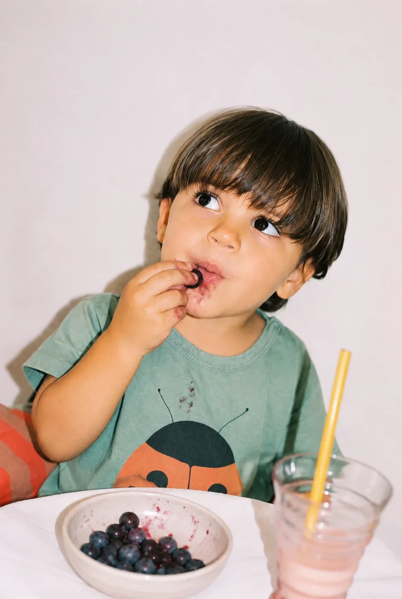
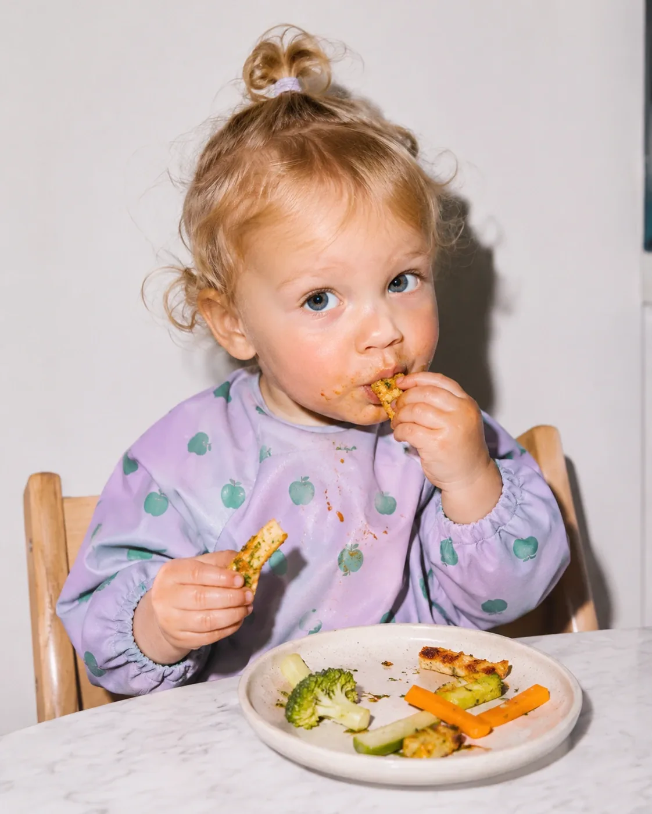
Užsirašykite ir programėlę gausite anksčiau už kitus.
BLW (angl. baby-led weaning) yra primaitinimo būdas, kai kūdikis nuo pat pradžių valgo pats: ima saugiai paruoštus maisto gabalėlius ir pats sprendžia, kiek suvalgyti. Kąsneliai tiks ir tada, jei dalį maisto duodate šaukšteliu.
Geriausia kelios savaitės prieš pirmuosius kąsnelius, kad spėtumėte pasiruošti. Dažniausiai primaitinti rekomenduojama pradėti apie 6 mėnesių, kai kūdikis sėdi su nedidele atrama, griebia daiktus ir nebeišstumia maisto liežuviu. Programėlė padės iki metų ir vėliau, kol mažylis valgys prie bendro stalo.
Tyrimai rodo, kad tinkamai paruošus maistą užspringimo rizika ne didesnė nei maitinant trintu maistu. Svarbiausia, kad maistas būtų tinkamo dydžio ir minkštumo, kūdikis sėdėtų tiesiai, o šalia visada būtų suaugęs. Programėlė kiekvienam produktui nurodo, kaip jį saugiai paruošti, ir padeda atskirti žiaukčiojimą nuo užspringimo. Patariame išklausyti ir kūdikių pirmosios pagalbos kursus.
Ne. Kąsneliai padeda planuoti ir pasiruošti, bet nediagnozuoja ir negydo. Jei kūdikis turi egzemą, maisto alergiją ar kitų sveikatos sutrikimų, prieš įvedant alergenus programėlė pasiūlys pasitarti su gydytoju.
Nedidelė komanda Lietuvoje. Turinį konsultuoja kūdikių dietologai ir vaikų gastroenterologai, o programėlę šiuo metu bando šeimos su kūdikiais.
Kol vyksta bandymas, programėlė nemokama. Kainą paskelbsime prieš išleisdami ją visiems, o užsirašiusieji ją sužinos pirmieji.